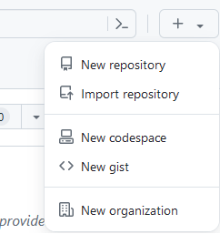
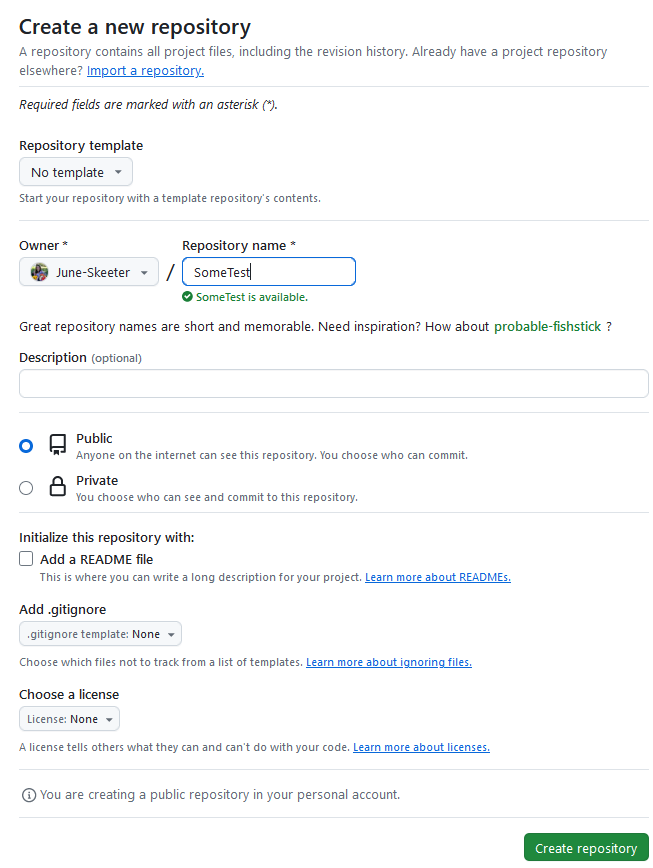
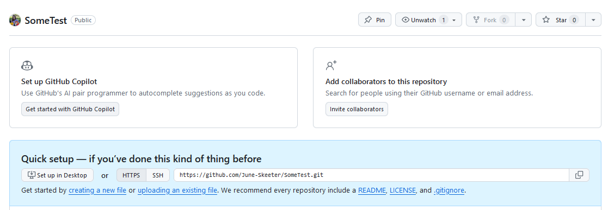

Using Git
We use git/github to manage our codebase. Version control is an essential to successfully managing of any project with multiple contributors! There can be a steep learning curve when you are first getting started with Git, but the time and hassle you will save your future self by learning will be enormous!
Git vs Github … whats the difference?
Git and Github are both incredibly powerful and useful tools. They can be used together to work towards a common end, but there are some important distinctions to highlight:
Git is an open source version control system. It lets you manage and track your code in “repositories”, keeping a history of changes each time you make a “commit”. You can run git locally on your personal computer and we also run it on our lab’s servers. If you want to install git, you can get started using these docs.
GitHub is a cloud-based service that hosts Git repositories. GitHub facilitates calibration between users and within organizations. UBC Micromet is a git “organization” that we use to host our operational codebase along with some important documentation. Github also provides a venue for hosting open source projects so that they can be viewed and accessed by the general public and provides free non-commercial web hosting services which can be used to make documentation pages (like this one!) and personal websites. Github is not the only option for hosting git repositories; GitLab, Bitbucket, SourceForge, and many other platforms provide similar services.
How Do We Use Git?
Our organization’s codebase is grouped into repositories, some are operation code that we are actively managing, while others are archived projects that are no longer in use, but still publicly visible.
What is a Repository?
A repository (or repo) is just a collection of code, files, data, etc. that are being tracked by Git. Generally, all components of a repo should work towards a common end, whether that is an expansive goal such as managing all code used in our processing pipeline, maintaining the versions of code running on our data loggers, or the backend of our organizations website
What is a Branch?
Branches can be thought of like limbs on a tree, or perhaps a more accurate analogy can be taken from hydrology, by comparing them to an anbranching river channel.
- Branches are separate “streams” of code that break off of the main “channel”. Some branches may be dead ends that don’t end up going anywhere. While some branches may lead lead to improvements that can be incorporated back into the main branch of the codebase. Others may break off from the main project entirely.
Branch Protection Rules
We use branch protection rules to protect the main codebase. All changes to the main branch of a protected repository, must be submitted via a “pull request” using a separate branch. This allows for review of the changes by other users before changes are incorporated. It adds an extra level of security by protecting the main branch of code from the erroneous keystrokes of novice and expert users alike! These rules are act as a “gate” that helps ensure any changes to operational code are intentional and agreed upon by relevant parties. If you try to push (force) a change to the main branch of a protected repository on our GitHub, you’ll be given an error message and told to submit a pull request instead! More info can be found here
Common Git Tasks
Creating a Repo From Scratch
Say you have a collection of code that you want to add to a local repository. The syntax would be as follows:
git init -b main
git add some_program.py
git commit -am "First Commit: Adding my initial code to repo"What is happening here?
init: Creates an empty repository with a “branch” (-b) named “main”
add: indicates that “some_program.py” will be tracked within the repo. Other files in the repo will not be tracked unless you explicitly add them. Alternatively bash git add . would all all files within the repo. There are more complex patterns that can be setup to explicitly exclude/include some files using “.gitignore” files, but that’s a topic for another day.
commit: Tells git to “save” a permanent copy of all (-a) tracked files in the repo in there current state and leave a commit message (-m) to leave important notes about the commit. Commit messages are extremely helpful, both for reminding yourself what happened, and indicating to collaborators what’s included in a commit.
- You should avoid leaving short/nondescript commit messages such as “updated code”, because that doesn’t help anyone
- It is good practice to make a commit any time you make an important change to your project!
Adding Your New Repository to GitHub
Go to github.com and follow the steps outlined in the images bellow:



git remote add origin https://github.com/June-Skeeter/SomeTest.git
git push --set-upstream origin mainThese commands will tell your local git where the remote (on the cloud) version of your repository is located and then “push” your local copy to the cloud. If you go back to the github repo and refresh the webpage, you’ll see that whatever files were in your local copy are now visible remotely!
Working With an Existing Repository
More often than not, you’ll end up working with an existing repository. You may need to make some changes, which can be added back to the main branch (following the branch protection rules!) or you may just need to run some fully developed code locally on your computer. For example, maybe you need to do some processing for the HOGG site in Manitoba. You can “download” a local copy of the repo and create a branch for your local changes as follows:
git clone https://github.com/ubc-micromet/Calculation_Procedures.git
git checkout -b MyHoggUpdatesWhat is happening here?
clone:: Tells git to download a local copy a repository from a remote location (i.e. a github URL) to your computer.
checkout: Tells git to create an new branch (-b) with the name “MyHoggUpdates”. This branch will contain all of your own adjustments, but the main branch on your local machine will not be altered! If you break something (e.g., delete an important code block), its easy to go back to the main branch. Just type bash git checkout main to go back in to the main branch. Note only need to add bash -b after bash checkout when creating a new branch. Git will automatically revert all files in the repo the the main version.
Contributing your Changes
Provided you have permission to write to the repository (this is granted on a per-user basis by repo “owners”), you can contribute any changes you make by pushing a copy of your branch to github. Say you added a new file “new_HOGG_file.ini”, you could add it, commit it, then push to git hub as follows:
git add new_HOGG_file.ini
git commit -am "A relevant description of your changes"
git push --set-upstream origin MyHoggUpdatesNote you only need to run the --set-upstream origin Test once per branch. The second, third, hundredth push you can simply type git push
Pulling Remote Changes
Say there were some important updates to the main remote branch that you need to incorporate to code on your local branch. Starting from within MyHoggUpdates You could:
git checkout main
git pull
git checkout MyHoggUpdates
git merge mainpull downloads all the changes from the main branch on github to your local machine.
merge will automatically incorporate any changes for files that don’t conflict with changes you’ve made to files locally. i.e., if you’re working on “new_HOGG_file.ini”, but someone else changed “existing_BB_file.ini” then the updates to “existing_BB_file.ini” will be brought in without causing any “merge conflicts”. If you also made an edit to “existing_BB_file.ini” that does not match the incoming change, it will create a merge conflict, that needs to be resolved manually.
Other Useful Commands and Features
git statusstatus will list which if any files have been changed since the last commit and any files that have been added but are not tracked.
git restore existing_BB_file.inirestore: will revert “existing_BB_file.ini” back to it’s state in the most recent commit. This is useful if you broke something and want to “go back” to the way things were. You can give a specific file name after
git revert HEAD~nrevert allows you go back any “n” number of commits, bash Head~2 would go back to the state you had two commits ago.
Issues: Opening issues on GitHub allows us to delegate work, discuss task and keep notes on various features.
- They can be labeled as bugs, upgrade requests, etc.
- Issues can be assigned to one or more members of the organization, and you can leave comments to discuss issues.
- An issue remains open until they are “closed”.
GitHub Pages: GitHub can be used to render static sites (like this one). Its a super useful skill/resource. But that’s a whole separate tutorial for another time!
Helpful Resources
Nice video tutorial
These guidelines will inform how we approach collaborating on a project.
Add Git Branch Name to Terminal Prompt (Linux/Mac)

I broke something :(
Sometimes you break something and need to know how to fix it. Pardon the profanity … but Oh Shit, Git is a really helpful resource.